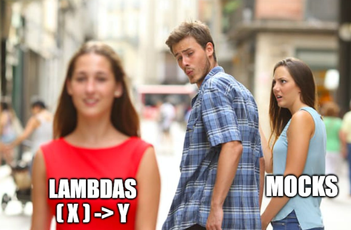
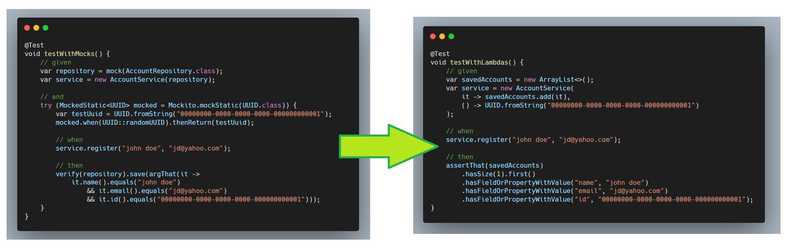

Less Mocks, More Functions!
Published: September 28, 2025
#functional programming #design #testing #java
After playing with Clojure, I was amazed by how testable everything is in the functional world.
In this article, we'll explore a technique that uses functional interfaces to reduce the number of mocks needed for testing.

I started thinking about incorporating some functional techniques into my Java development work - without shaking up the codebase too much or becoming "that functional programming person" colleagues avoid at the water cooler.
The main idea is simple: extract dependencies that produce side effects and move them outside of the component you want to test.
The Problem
This technique is particularly effective when the tested component relies on a dependency but utilizes only a select few of its methods, ideally just one. We'll use Java for the code examples in the article, but the approach can be applied regardless of the language or testing frameworks.
Let's start with a typical example:
class AccountService {
private final AccountRepository repository;
AccountService(AccountRepository repository) {
this.repository = repository;
}
void register(String name, String email) {
var uuid = UUID.randomUUID();
var account = new Account(uuid.toString(), name, email);
// some business logic
repository.save(account);
}
}
To test this without connecting to a database, we need to mock the repository:
@Test
void testWithMocks() {
var repository = mock(AccountRepository.class);
var service = new AccountService(repository);
service.register("john doe", "jd@yahoo.com");
verify(repository).save(argThat(it ->
it.name().equals("john doe")
&& it.email().equals("jd@yahoo.com")
&& it.id() != null
));
}
Using Functions for Side Effects
If we think about it, we only need a mock because AccountService::register produces side effects (saving the Account into the database). Another obvious problem with our design is that we depend on the whole AccountRepository class even though we only use its save() method.
Simply put, our class needs a function that accepts an Account and saves it.
The signature of this function would be (Account) -> void.
In Java, this function is also known as Consumer<Account>.
So, let's change AccountService and make it depend on this function instead of holding the whole repository:
class AccountService {
private final Consumer<Account> saveAccount;
AccountService(Consumer<Account> saveAccount) {
this.saveAccount = saveAccount;
}
// Maintain backwards compatibility
@Autowired
AccountService(AccountRepository repository) {
this(repository::save);
}
void register(String name, String email) {
var uuid = UUID.randomUUID();
var account = new Account(uuid.toString(), name, email);
// some business logic
saveAccount.accept(account);
}
}
Testing Becomes Fun
Now testing becomes much simpler:
@Test
void testWithLambdas() {
List<Account> savedAccounts = new ArrayList<>();
var service = new AccountService(savedAccounts::add);
service.register("john doe", "jd@yahoo.com");
assertThat(savedAccounts)
.hasSize(1).first()
.hasFieldOrPropertyWithValue("name", "john doe")
.hasFieldOrPropertyWithValue("email", "jd@yahoo.com")
.hasFieldOrProperty("id");
}
Testing exceptions is equally straightforward:
@Test
void testWithLambdas_exceptions() {
var service = new AccountService(__ -> {
throw new IllegalArgumentException("test exception");
});
assertThatThrownBy(() -> service.register("john doe", "jd@yahoo.com"))
.isInstanceOf(IllegalArgumentException.class);
}
Handling Static Dependencies
Our code still isn't "pure" because it calls UUID.randomUUID().
We can apply the same technique here by extracting the UUID generation:
class AccountService {
private final Consumer<Account> saveAccount;
private final Supplier<UUID> generateUuid;
AccountService(Consumer<Account> saveAccount, Supplier<UUID> generateUuid) {
this.saveAccount = saveAccount;
this.generateUuid = generateUuid;
}
// Backwards compatibility
@Autowired
AccountService(AccountRepository repository) {
this(repository::save, UUID::randomUUID);
}
void register(String name, String email) {
var uuid = generateUuid.get();
var account = new Account(uuid.toString(), name, email);
// some business logic
saveAccount.accept(account);
}
}
Now our tests are completely deterministic:
@Test
void testWithLambdas() {
List<Account> savedAccounts = new ArrayList<>();
var service = new AccountService(
savedAccounts::add,
() -> UUID.fromString("00000000-0000-0000-0000-000000000001")
);
service.register("john doe", "jd@yahoo.com");
assertThat(savedAccounts)
.hasSize(1).first()
.hasFieldOrPropertyWithValue("name", "john doe")
.hasFieldOrPropertyWithValue("email", "jd@yahoo.com")
.hasFieldOrPropertyWithValue("id", "00000000-0000-0000-0000-000000000001");
}
Conclusion
By extracting side effects into functions, we've made our code:
✅ Easier to test - no mocks needed
✅ More focused - our components only depends on what it actually needs
✅ Backwards compatible - existing code continues to work
This technique aligns with SOLID principles (specifically Interface Segregation and Dependency Inversion) while borrowing useful concepts from functional programming. The result is cleaner, more testable code that's easier to reason about.
